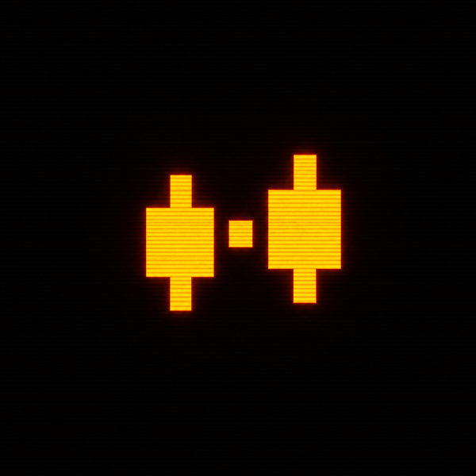

CHOOSE THE GAP
Browse time-boxed markets tied to earnings, weekends, halts and breaking news.
CONTRACT CREATED
OPENGAP PROTOCOLTrade the next opening move while the world is still reacting. Fully collateralized markets, settled by the first valid Chainlink print.
WILL NVDA OPEN 3% HIGHER?
THE MISSING MARKET
THE WINDOW NOBODY OWNS
Earnings land after close. Deals break on Sunday. Policy shifts overnight. Millions form a view, but the underlying market cannot express it yet.
Generic AMMs keep trading against stale inventory. LPs widen out. Users take bad prices. OpenGap turns that dead time into a transparent market.
HOW IT WORKS
THREE MOVES. ONE OBJECTIVE PRICE.
No committee chooses the result. No one can move the finish line. Every contract is defined before orders open and settles onchain.
Browse time-boxed markets tied to earnings, weekends, halts and breaking news.
CONTRACT CREATEDCommit USDG to the outcome you believe. Every position is fully collateralized.
ORDERS LOCKThe first eligible Chainlink print resolves the market. Winners claim directly.
NO HUMAN ORACLEMARKETS NEVER SLEEP
LIVE WINDOWS
BUILT FOR THE MOMENT
Results are out. Guidance changed. The conference call is live. Price the next open while the story unfolds.
Forty-one hours of headlines between Friday close and Monday open. The view does not have to wait.
A halted stock reopens into concentrated uncertainty. OpenGap creates a fair, precommitted price window.
PROTOCOL, NOT A PROMISE
VERIFIABLE BY DEFAULT
Markets are fully collateralized in USDG. Outcomes use canonical price feeds. Settlement can be called by anyone.
INSPECT THE APP ->NETWORK
ROBINHOOD CHAINSETTLEMENT ASSET
USDGPRICE SOURCE
CHAINLINKCOLLATERAL
100% FUNDEDRESOLUTION
PERMISSIONLESSPROTOCOL FEE
0.50%THE OPENING SEQUENCE
OPENING NVDA-2026-09-11-GAP-3PCT.EXE
Checking collateral pool ................................FUNDED
Checking order cutoff ................................LOCKED
Waiting for eligible Chainlink round ...................WAIT
NEXT VALID PRINT SETTLES THE MARKET_
FREQUENTLY ASKED
READ BEFORE OPEN
A fully collateralized outcome contract tied to the next eligible opening print of a supported stock token.
The contract reads the predefined Chainlink price feed. No administrator manually chooses an outcome.
The market enters its timeout path and collateral becomes refundable under the market's published rules.
No. Positions are fully funded. There is no margin and no debt attached to an outcome position.
THE BELL HAS NOT RUNG YET.